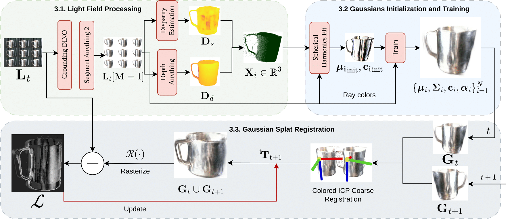

Object tracking is an important step in robotics and reautonomous driving pipelines, which has to generalize to previously unseen and complex objects. Existing high-performing methods often rely on pre-captured object views to build explicit reference models, which restricts them to a fixed set of known objects. However, such reference models can struggle with visually complex appearance, reducing the quality of tracking.
In this work, we introduce an object tracking method based on light field images that does not depend on a pre-trained model, while being robust to complex visual behavior, such as reflections. We extract semantic and geometric features from light field inputs using vision foundation models and convert them into view-dependent Gaussian splats. These splats serve as a unified object representation, supporting differentiable rendering and pose optimization.
We further introduce a light field object tracking dataset containing challenging reflective objects with precise ground truth poses. Experiments demonstrate that our method is competitive with state-of-the-art model-based trackers in these difficult cases, paving the way toward universal object tracking in robotic systems.

An overview of our light-field-based object tracking method. Given a light field image of a previously unseen object, we first extract an object mask using a segmentation model. The light field is then converted into a sparse disparity map, fused with dense monocular disparity, and unprojected to produce an object point cloud. Using this point cloud and camera rays, we initialize a Gaussian object representation with 3D centroids and view-dependent colors, and train it to obtain a Gaussian representation of the current frame. To register consecutive frames, we first apply colored ICP on the Gaussian centroids and colors to estimate a coarse rigid transformation. This estimate is then refined by jointly rasterizing the combined Gaussians under supervision from the original light field image.
@misc{goncharov2025lightfieldbased6dof,
title={Light Field Based 6DoF Tracking of Previously Unobserved Objects},
author={Nikolai Goncharov and James L. Gray and Donald G. Dansereau},
year={2025},
eprint={2512.13007},
archivePrefix={arXiv},
primaryClass={cs.CV},
url={https://arxiv.org/abs/2512.13007},
}